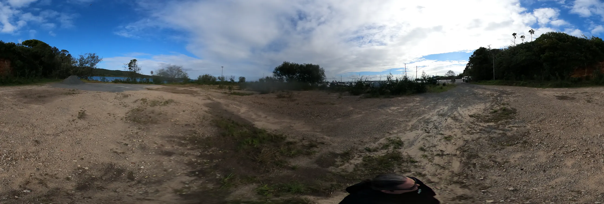
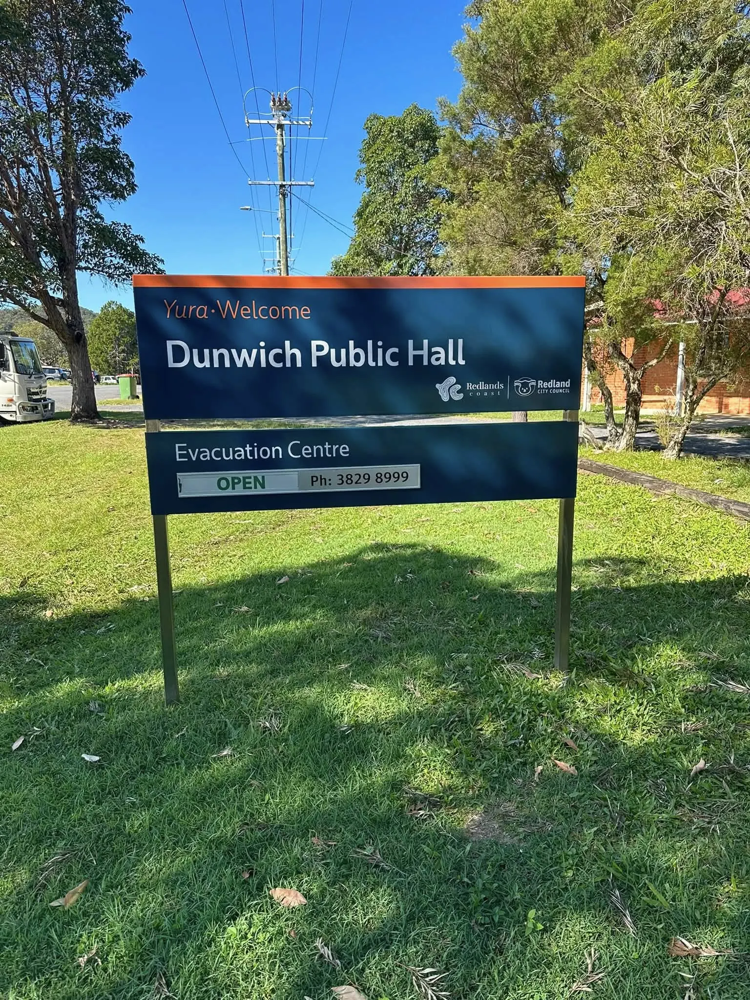
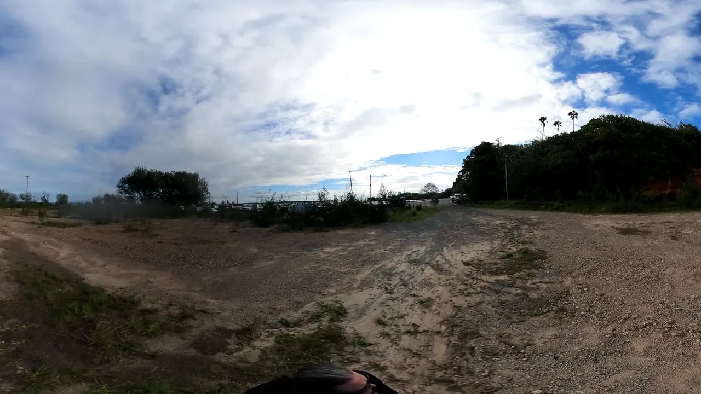

Dunwich(Gumpi)Open Data Lab
A community-facing prototype for turning site photos, official project facts and local ideas into design simulations people can inspect, remix and question before the $41 million ferry terminal upgrade hardens into concrete.
New track
Gumpi Ferry Terminal Groove.
A second soundtrack for the public data ask: field proof, local imagination and a bit of rhythm under the point-cloud request.
Current prototype
Start with what can be checked today.
The first pass uses community 360 photos from the terminal area, two photos from the Dunwich Hall display, official public sources and a plain-English design workflow. The next pass asks for drone footage, LiDAR point clouds and source files that can support better simulations.
Project doors
Move from evidence to imagination without losing the receipt.
Each page has one job. First locate the evidence, then read the official trail, choose a design spectrum, make simulation prompts, pick tools, and keep the next data request clear.

Evidence map
Use the 360-photo points and flattened panoramas as a rough public site walk, with the hall render photos labelled as display-board photos.
Open map
Official trail
Keep TMR, Your Say, Gumpi Master Plan and funding details separate from community proposals.
Read official trail
Simulation workflows
Step through quick AI mock-ups, world builders, 3D asset generation, drone capture, point clouds and co-design review.
Run the workflow
Connected local repos
This sits between ferry infrastructure, digital twin builders and Ballow Road ideas.
The links are reciprocal so visitors can move between practical public prototypes without pretending they are all one finished system.
Straddie Digital Twin Builders
Level 1 place-mesh prompts for venues, streets and ferry-gateway worlds.
Open L1 buildersReady S.E.T. Co-op Trust Hub
The trust, jobs, media and grant-readiness layer that can turn public data work into local capability.
Open Ready S.E.T.Ballow Road Sand & Screen Hub
The 10-12 Ballow Road sand sports, culture, market and screen concept beside the ferry gateway.
Open 10-12 Ballow